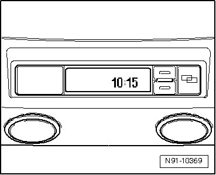
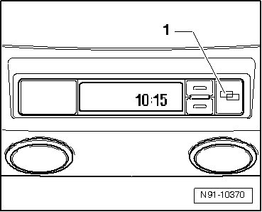
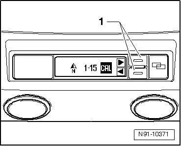
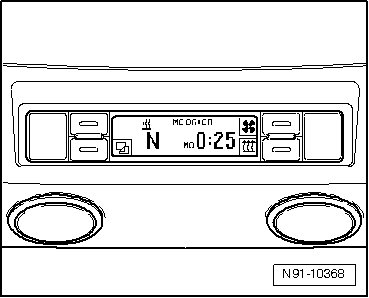
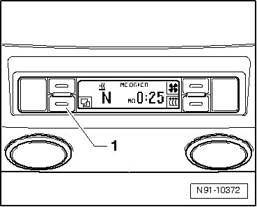
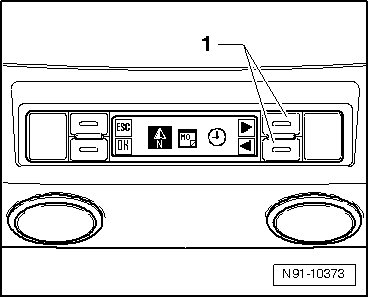
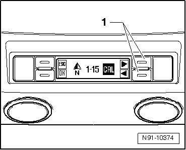

Compass: Adjustments
Compass, Calibrating Manually
The compass is automatically calibrated permanently. If the vehicle is equipped with subsequently installed electrical devices (e.g. cellular telephone, TV, etc.), compass must be calibrated manually after installation.
Determine which display unit is installed in the roof console and then perform calibration.
Compass, Calibrating On Vehicles Without Auxiliary Heater

- To calibrate the compass, drive vehicle outside to area away from tall buildings, and with no overhead obstructions (trees, bridges, etc.).
- Switch on ignition.
- Press button 1.

- Using function buttons 1, select "CAL".

After 10 seconds, the display automatically switches back to clock display. "CAL" is also shown in the display then.
- Drive vehicle in a complete circle at a speed of approximately 10 km/h.
This completes the calibration. The letters "CAL" go out in the display and the current direction is displayed.
Compass, Calibrating On Vehicles With Auxiliary Heater

- To calibrate the compass, drive vehicle outside to area away from tall buildings, and with no overhead obstructions (trees, bridges, etc.).
- Switch on ignition.
- Press button 1.

- Using function buttons 1, select "N".

- Using function buttons 1, select "CAL".

- Press button OK.
- Drive vehicle in a complete circle at a speed of approximately 10 km/h.
This completes the calibration. The letters "CAL" go out in the display and the current direction is displayed.